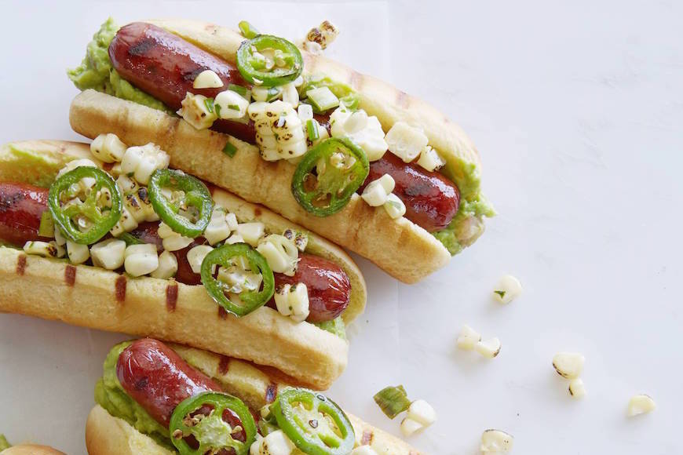

Tex Mex Hot Dog

Home
Description:
- It's also vegetarian-friendly when made with a veggie dog.
The freshly made corn salsa still has bite when we top it with Monterey Jack cheese.
The grilled jalapeño slices give this sandwich
a welcome bit of heat while the lime-cilantro mayo keeps it ultra-cool.
Ingredients:
- 1 cup corn salsa
- 1 cup shredded Monterey Jack cheese
- 2 jalapeño peppers, sliced and grilled
- For the lime-cilantro mayonnaise:
- 1/2 cup mayonnaise
- Juice of 1/2 a lime
- 1 tablespoon cilantro, chopped
Steps:
- Open buns on work surface and spoon equal amounts of corn salsa onto each, spreading it out evenly
- Place one cooked wiener onto each bun. Sprinkle with Monterey Jack then add slices of grilled jalapeños.
- Place prepared hot dogs into an oven-safe casserole or rectangular baking pan
- Transfer to preheated 250°F oven and bake for 10-15 minutes or until cheese has melted and bun is toasted.
Combine mayo, lime juice and cilantro and add to hot dogs as garnish. Serve immediately.
Home